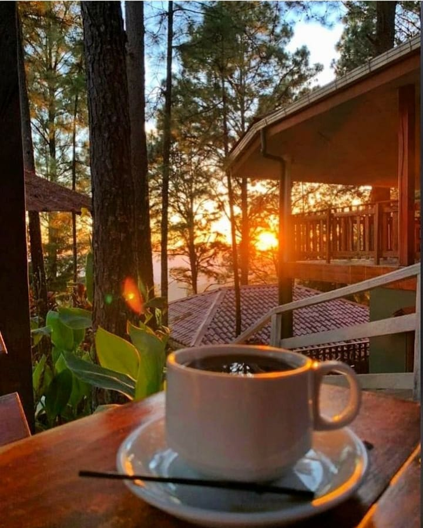
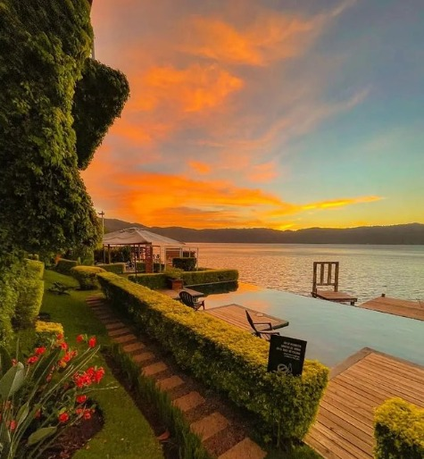
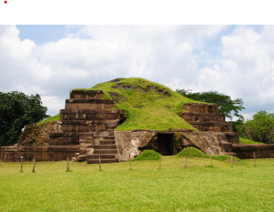

EXPERIENCIAS CON TRIP SV
¡Disfruta de las maravillas de El Salvador!


Conoce nuestra cultura en nuestros pueblos coloniales en suchitoto
Cada rincón de Suchitoto alberga un encanto arquitectónico muy bien
conservado. Al caminar por sus calles empedradas apreciarás los techos de teja hecha de
tierra, hermosos balcones, pintorescas casas y puertas que te transportarán al pasado.
Además, podrás encontrar muchos centros culturales, galerías, museos, ventas de
artesanías, espacios de desarrollo comunitarios, entre otros.
Leonor Macquaid 10/05/2024
Hello, I want to thank trip SV for showing me how beautiful El Salvador is, I love him!

Una experiencia unica sobre olas en Surf City
Para los amantes del surf tienen una cita ineludible en Surf City. De oriente a occidente del litoral salvadoreño y a lo largo de poco más de 300 kilómetros se suceden playas y olas que harán las delicias de los surfistas más expertos y de aquellos que deseen iniciarse en este apasionante deporte.
Ana Siguenza 05/08/2024
Soy sorfista de la hermana republica de Honduras y decirles que tienen un oleaje fenomenal para practicar el deporte que tanto amo, gracias por la experiencia los visitare con mas frecuencia!

Conoce el complejo de los volcanes al ascender al volcan ilamatepec
Parte del Complejo Los Volcanes, el también llamado volcán de Santa Ana es el más elevado del país con una altitud de 2,381 metros sobre el nivel del mar. El ascenso se puede realizar de día o de noche con total seguridad. Pon a prueba tu resistencia alcanzando la cima del volcán Ilamatepec, también llamado volcán de Santa Ana. Si lográs llegar a la parte más alta tendrás de las vistas más impresionantes de la zona, al fondo observarás las aguas turquesas del magestuoso lago de Coatepeque.
Dalia Maritza de Sagastume 24/06/2024
Mi esposo y yo quisimos poner a prueba nuestra resistencia al ascender al volcan ilamatepec, disfrutamos mucho la experiencia, gracias a la agencia Trip SV por su excelente atencion, recomendadisimos!!

Experimenta en ruta panoramica con majestuosas vistas hacia el lago de Ilopango
Disfruta de majestuosos paisajes hacia el Lago de Ilopando, de un lado, y hacia montañas del otro, en este corredor panorámico. A unos pocos minutos de la capital de El Salvador podrás recorrer esta ruta que se ha convertido en un atractivo turístico para nacionales y extranjeros, ya que se trata de un circuito de pueblos que puedes recorrer disfrutando de hermosas vistas. En el camino puedes pararte a contemplar el imponente Lago de Ilopango o la riqueza natural que constituye esta Zona de Interés Turístico Nacional. Además puedes disfrutar de un rico café o de la gastronomía que ofrecen los restaurantes de la zona.
Arthur Merid 21/04/2024
Ya he visitado El Salvador en otras ocasiones, soy de España; en esta oportunidad quise dejarme guiar por Trip SV ya que mis amigos me han brindado muy buenas referencias y sin duda puedo confirmarlo, he conocido la belleza de lago de ilopango, su ruta panoramica con vistas asombrosas y su gastronomia es deliciosa, gracias trip sv!
